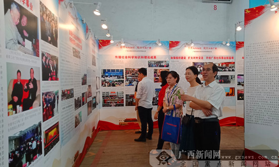
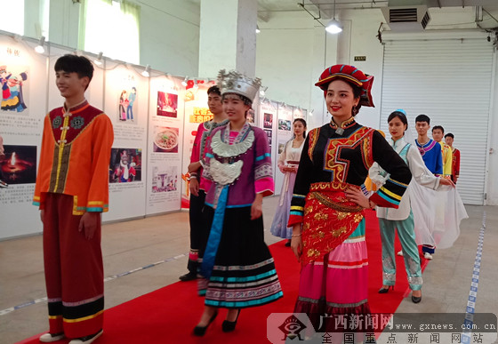

2019年广西社会科学普及活动周启动仪式上向学校赠送书籍。广西新闻网记者 伍永志摄

观众在2019年广西社会科学普及活动周上阅读科普板报内容。广西新闻网记者 伍永志摄
12日，2019年广西社会科学普及活动周启动仪式在广西展览馆举行。自治区级社科类社会组织代表、在邕高校社科联代表、赠书仪式师生代表约200人参加启动仪式。
据介绍，本次活动周举办时间为5月12～18日，主题为“普及社科知识，建设壮美广西”，实行自治区、市、县三级联动。自治区社会科学普及工作联席会议各成员单位、各设区市、县（市、区）、自治区级社科类社会组织、高校社科联、社会科学普及基地，将深入机关、农村、企业、学校、社区，开展社科大讲坛、展板宣传、咨询服务等超过1000场形式多样的社会科学普及活动。
2019年广西社会科学普及活动周开展了近100项内容丰富、形式多样的科普活动，包括致敬中华人民共和国成立70周年主题图片展、广西民族和地方特色文化宣传、热点问题专家咨询、广西社科大讲坛、社会科学知识有奖竞答、科普读物展示、广西社会科学普及工作联席会议成员单位科普宣传、自治区社科联会员单位社科普及板报宣传等。广西社科普及工作联席会议成员单位、在邕自治区级社科类社会组织、高校社科联等单位，围绕活动周主题，以现场咨询服务、展板宣传、印发科普小册子等形式，面向公众重点宣传宣传党的路线方针政策、中华优秀传统文化、社会主义核心价值观，推动马克思主义理论大众化，为广大人民群众提供了丰富的社会科学精神大餐。

2019年广西社会科学普及活动周上的民族服饰展示。广西新闻网记者 伍永志摄
2019年广西社会科学普及活动周上的文化创意展示。广西新闻网记者 伍永志摄
广西社会科学普及活动周由自治区人民政府主办，自治区社会科学普及工作联席会议成员单位（自治区社科联、自治区教育厅、自治区科技厅、自治区民政厅、自治区司法厅、自治区财政厅、自治区人力资源和社会保障厅、自治区生态环境厅、自治区文化和旅游厅、自治区卫生健康委、自治区广电局、自治区体育局）承办。（来源：广西新闻网 记者 伍永志）